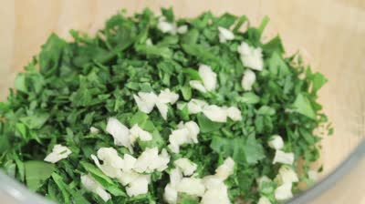

Step 1: Put a pan of water on to boil. While that's happening, sort through your cleaned clams and if there are any that aren't tightly closed, give them a sharp tap. If they don't close, throw them away. Put a large pan with a lid on a high heat and let it heat up. Finely slice the parsley stalks, then put them to one side and roughly chop the leaves. Peel and chop the garlic, quarter the tomatoes and get your wine ready.
